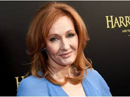

′Classic′ – a book which people praise and don’t read.
–Mark Twain
Books are the quietest and most constant of friends; they are the most accessible and wisest of counselors, and the most patient of teachers.
– Charles W. Eliot
The library is inhabited by spirits that come out of the pages at night.
–Isabel Allende
If you don’t like to read, you haven’t found the right book.
–J.K. Rowling